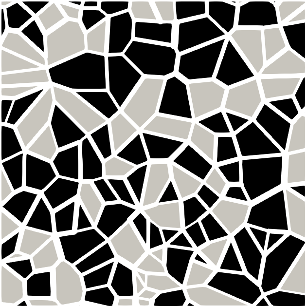

Single-Phase Multi-Scale Porous Media (Greyscale Model - lbpm_greyscale_simulator)¶
The LBPM model to simulate single-phase multi-scale porous media, also called greyscale model, is constructed to approximate the solution of the Darcy-Brinkman equations in grey regions, coupled to a Navier-Stokes solution in open regions. The generalized model for isothermal fluid flow in porous media employs volume-averaged Navier-Stokes equations that account for both linear and nonlinear drag effects:
In this formulation, \(p\) and \(\boldsymbol{u}\) denote the volume-averaged pressure and velocity, respectively, and \(\rho\) represents the fluid density. The model incorporates \(\nu\) as the kinematic viscosity of the fluid and \(\nu_eff\) as an effective viscosity parameter. External force effects are captured through the acceleration term \(\boldsymbol{g}\). The geometric function \(F_e\), derived from Ergun’s experimental investigations, characterizes the porous medium structure through the relation:
LBM Formulation¶
Click here to open: LBM Formulation
A multiple-relaxation-time (MRT) lattice Boltzmann equation with D3Q19 discretization describes momentum transport for the phase-averaged equations:
The total force \(\boldsymbol{F}\) is imposed based on the discrete force construction developed by Guo et al. (2002):
The fluid velocity is computed through the relation for the forcing scheme:
However, to handle the nonlinearity arising from the velocity-dependent force term, an explicit solution for the velocity is employed:
that utilizes a temporal velocity field \(\boldsymbol{v}\):
and the coefficients governing this nonlinear transformation are:
where \(c_s^2 = 1/3\) is the speed of sound and \(\boldsymbol{\xi}_q\) are the unit lattice vectors for the D3Q19 lattice discretization:
The moments defined in the Gram-Schmidt basis are linearly independent functions of the distribution functions:
The equilibrium formulation is adapted from the generalized volume-averaged macroscopic equations. As established in the appendix of Guo and Zhao (2002), the definition of the equilibrium distribution function yields the following moments, where the presence of the porous matrix modifies the second-order velocity terms by a factor of \(1/\epsilon\):
Applying this to the D3Q19 MRT basis yields the corresponding equilibrium moments, given by:
Although the theoretical derivation of the macroscopic equations yields the non-zero expressions shown above for \(m_{10}^{eq}\) and \(m_{12}^{eq}\), the actual LBPM MRT implementation enforces these moments to be strictly zero (i.e., \(m_{10}^{eq} = 0\) and \(m_{12}^{eq} = 0\)) following moments-based approach proposed by d'Humières [2].
The relaxation parameters for the momentum diffusion (collision operator) are determined based on the effective relaxation time \(\tau_{eff}\):
where the effective relaxation time \(\tau_{eff}\) is related to the effective kinematic viscosity of the fluid by \(\nu_{eff} = (\tau_{eff} - 1/2)/3\). Note that in the generalized volume-averaged formulation, this effective viscosity \(\nu_{eff}\) dictates the viscous momentum diffusion (Brinkman term), while the linear drag term (Darcy) depends strictly on the thermodynamic fluid kinematic viscosity \(\nu\), defined by the base relaxation time \(\tau\). The relation imposed on the even relaxation times enforces the no-slip velocity condition exactly at a position one-half lattice spacing from the solid boundary. Consequently, it leads to a viscosity-independent numerical error in the permeability estimate [3].
Run lbpm_greyscale_simulator¶
Launch the simulator from the directory containing the input database and .raw image:
mpirun -np $NUMPROCS lbpm_greyscale_simulator input.db
where $NUMPROCS must equal the product of the three values in nproc.
For example, nproc = 2, 2, 2 requires eight MPI processes. The executable must
be on the shell search path. The input database must contain four sections: Greyscale, Domain,
Analysis, and Visualization. The last two may be empty to use their
defaults.
Model parameters¶
Set the flow and collision parameters in the Greyscale class section:
Key |
Default |
Meaning |
|---|---|---|
|
|
This routine allow choose differente collision models, on the purpose of
tests for LBM developers. The default collision model is set |
|
|
Fluid relaxation time, determining the viscosity used in porous drag and the reported permeability. |
|
|
Ratio of effective viscosity to fluid viscosity (\(\mathrm{ViscosityRatio} = \displaystyle\frac{\nu_{eff}}{\nu}\)), used to derive
|
|
Derived |
Effective relaxation time controlling viscous momentum diffusion in the MRT collision operator. An explicit value overrides the ratio. |
|
|
External force vector per cubic meter in lattice units, corresponding to
\(F=\rho\boldsymbol{g}=\Delta p / L\) in the formulation. Set a nonzero value for
force-driven periodic flow ( |
|
|
Enable the nonlinear drag term (Eq. (14)) when |
|
|
Maximum number of lattice timesteps. |
|
|
Relative change in the volume-averaged flow between analysis samples at which the run stops. |
|
|
Inlet and outlet density values for the pressure boundaries used
with |
The fluid and effective kinematic viscosities in lattice units are
with the default relation
Both relaxation times must exceed 0.5 for positive viscosity. Values close
to 0.5 can be unstable numerically; tau = 1.0 and tau_eff = 1.0
provide a starting point for checking a new geometry.
Image labels and grey-region properties¶
The microtomography image must be segmented into impermeable solid regions,
resolved open pore space, and one or more grey regions. In LBPM, the geometry
labels are assigned by the Domain class through the mapping from
ReadValues to WriteValues, as follows:
Labels less than or equal to zero identify solid voxels.
Positive labels identify active voxels, including both open and grey regions.
Assign porosity
1.0to resolved open pore space. The collision kernels disable porous drag at these voxels.Assign porosity strictly between zero and one to grey regions, together with a positive local permeability.
There are two ways to supply the porous-medium properties.
Properties by image label¶
Supply three paired lists in Greyscale:
ComponentLabels = 1, 2
PorosityList = 1.0, 0.3
PermeabilityList = 1.0, 0.01
These values describe open pore space with label 1 and a grey region with
label 2. All three lists must have equal lengths, and every active label
must appear, including labels introduced by inlet or outlet layers. Each
porosity must satisfy \(0 < \epsilon \leq 1\), and each permeability must
be positive. The positive permeability supplied for an open-pore label is a
placeholder because drag is disabled when its porosity is exactly one.
The permeability values specified in PermeabilityList are expressed in
square micrometres (\(\mu m^{2}\)) and internally converted to lattice
units using voxel_length, which represents the image resolution in
micrometres per voxel:
where \(h\) is voxel_length. For example, a permeability of
0.01 at a resolution of 2.0 micrometres per voxel becomes 0.0025
in lattice units. Local grey-region permeability is an input property;
the bulk sample permeability is computed from the simulated flow.
Properties from voxel maps¶
Alternatively, replacing ComponentLabels, PorosityList and
PermeabilityList with .raw input file maps:
FileVoxelPorosityMap = "porosity.raw", "double"
FileVoxelPermeabilityMap = "permeability.raw", "double"
each file is a global, headerless array of double-precision values with the
same dimensions, ordering, and alignment as the geometry image. The sequence
of data in input map follow index = x + Nx*y + Nx*Ny*z. Rank zero reads
the arrays and distributes them using
Domain.N, Domain.n, Domain.nproc, and Domain.offset. Only the
datatype "double" is implemented for these property maps. Permeability
values use the same physical units as PermeabilityList, and the validity
checks apply at every active voxel. When using porosity and permeability maps,
ComponentLabels is not required.
However, ReadValues and WriteValues must still be specified in the
Domain section, even when the geometry contains many labels. To preserve
the existing labels, use identical values in both lists. Porosity and
permeability are assigned to each active voxel using the values at the
corresponding spatial position in the maps.
If both voxel maps (FileVoxelPorosityMap
and FileVoxelPermeabilityMap) and parameter lists (PorosityList and
PermeabilityList) are provided, which is not recommended, the porosity and
permeability values will be read exclusively from the voxel maps. The corresponding
parameter lists will be ignored.
Use property maps with BC = 0 and without generated inlet or outlet mixing
layers. The map reader does not generate property values for added reservoir
or mixing layers; use the label-based method for those configurations.
When Domain.Filename is supplied, the simulator decomposes the global
geometry image internally. Set N to the original image dimensions,
n to each rank’s interior dimensions, and nproc to the process grid.
For an uncropped image, the componentwise product of n and nproc
matches N. offset selects the starting voxel when reading a subregion.
See Domain Decomposition (lbpm_serial_decomp) for the decomposition settings. Without
Filename, the simulator instead expects pre-decomposed ID.00000,
ID.00001, and subsequent rank files, including their halo layers.
Boundary Conditions¶
Set BC in the Domain section. The greyscale driver supports the
following flow boundary conditions:
BC = 0– periodic boundaries. Drive flow with a nonzeroGreyscale.F.BC = 3– fixed pressure at the lower and upper z faces, with periodic boundaries in x and y. SetGreyscale.dinandGreyscale.dout.
For MRT, the pressure relation is \(p = \rho/3\), so din and dout
are density values rather than pressures in physical units. For example,
din = 1.001 and dout = 1.0 impose a lattice pressure difference of
\(0.001/3\).
For periodic images, mismatched inlet and outlet pores can restrict flow
(as illustrated in Single-Phase Pore-Scale Model (lbpm_permeability_simulator) and
3D Digital Rocks).
InletLayers and OutletLayers can modify the geometry near the domain
faces to improve connectivity. Specify three counts, in x, y, z order.
In the greyscale model, zero or negative labels represent solid voxels,
while positive labels represent active pore or grey regions.
When Domain.Filename is supplied, the following settings select the
first five and last five existing z planes for modification:
InletLayers = 0, 0, 5
OutletLayers = 0, 0, 5
The InletLayers and OutletLayers command only works for z planes.
These settings modify existing planes; they do not append additional
slices. The two zeros disable layer generation along x and y. LBPM
changes only solid voxels whose corresponding
position on the opposite z face has a positive label. It copies that
positive label from the same x and y coordinates. Existing positive labels
remain unchanged, as illustrated below:
Current label |
Opposite-face label |
Result |
|---|---|---|
|
|
|
|
|
|
|
|
|
With label-based properties, copied grey labels receive the porosity and permeability associated with their new labels.
For BC = 3, provide open-pore inlet and outlet reservoirs in the geometry
and use the label-based property method.
Note
The built-in AbsPerm calculation uses the magnitude of F as the
driving acceleration. It does not infer a pressure gradient from din
and dout. Use the periodic, force-driven setup below for the reported
permeability; pressure-driven runs require a separate permeability
calculation from the imposed pressure drop and measured bulk flux.
Input File Example for BC = 0¶
The following input.db assumes a 64 x 64 x 64 raw 8-bit image named
geometry.raw. Label 0 is solid, label 1 is open pore space, and
label 2 is a grey region. The property values are illustrative and should
be replaced with values appropriate to the sample.
Greyscale {
collision = "MRT"
tau = 1.0
ViscosityRatio = 1.0
Den = 1.0
F = 0.0, 0.0, 1.0e-6
Forchheimer = false
timestepMax = 100000
tolerance = 0.001
ComponentLabels = 1, 2
PorosityList = 1.0, 0.3
PermeabilityList = 1.0, 0.01 // square micrometres
}
Domain {
Filename = "geometry.raw"
ReadType = "8bit"
N = 64, 64, 64 // original image dimensions
nproc = 1, 1, 1 // MPI process grid
n = 64, 64, 64 // interior voxels per MPI rank
offset = 0, 0, 0
voxel_length = 1.0 // micrometres per voxel
ReadValues = 0, 1, 2
WriteValues = 0, 1, 2
BC = 0
}
Analysis {
analysis_interval = 1000
visualization_interval = 10000
restart_interval = 1000000
}
Visualization {
format = "vtk"
}
Run this example with one MPI process:
mpirun -np 1 lbpm_greyscale_simulator input.db
To use eight processes for the same image, change nproc to 2, 2, 2,
n to 32, 32, 32, and launch with -np 8. Keep N unchanged.
The example places checkpoint output beyond the maximum timestep; visualization
and analysis remain active.
Assessing Steady State Permeability¶
The Analysis section controls the sampling and output intervals:
analysis_interval = 1000– compute averaged flow, convergence, and permeability every 1000 timesteps by default.visualization_interval = 1000– write field data every 1000 timesteps by default.restart_interval = 10000– write checkpoint files every 10000 timesteps by default.
All three intervals belong in Analysis, including
visualization_interval. Use positive, even intervals and an even
timestepMax because the run loop advances an odd/even pair before checking
analysis and output conditions.
Defining \(\overline{u}_{\parallel}\) as the bulk-volume
average velocity projected along F:
For example, if the force acts only in the positive z direction, then \(\overline{u}_{\parallel}=\overline{u}_z\).
The convergence error employs \(\overline{u}_{\parallel}\) is
The simulation stops when this sampled relative change is no greater than
tolerance or when timestepMax is reached. This criterion measures the
change in averaged flow, so inspect the permeability history before treating
the final value as a steady-state measurement. A connected flow path and a
nonzero driving force are needed for a meaningful periodic-flow measurement.
A zero or nonfinite flow, or a reported NaN error, indicates a failed
measurement and should not be interpreted as convergence.
For the periodic, force-driven case, the reported permeability is
The output is in square micrometres when voxel_length is in micrometres.
The averaged velocity is normalized by the full sample volume, including
solid voxels. With nonlinear Forchheimer drag enabled, this ratio is an
apparent permeability that depends on the driving force.
Rank zero appends the results to Permeability.csv. Despite the extension,
the file is whitespace-delimited and has the columns
|
|
|
|
|
|
|
|
|
|
|
|
|
AbsPerm is the bulk permeability in square micrometres. vax, vay,
and vaz are the bulk-volume average velocity components in lattice units;
mu contains the kinematic viscosity \((\tau - 1/2)/3\).
Vs, As, Hs, and Xs contain the geometric Minkowski measures.
Use a separate working directory for each run to keep appended histories
from different simulations separate.
For example, plot the permeability history with Python, pandas, and Matplotlib:
import pandas as pd
from matplotlib import pyplot as plt
data = pd.read_csv("Permeability.csv", sep=r"\s+")
permeability_md = data["AbsPerm"] / 0.0009869233
plt.plot(data["timestep"], permeability_md)
plt.xlabel("Timestep")
plt.ylabel("Permeability (mD)")
plt.tight_layout()
plt.show()
If the permeability is still drifting, rerun with a larger timestepMax
and a smaller tolerance. To assess intrinsic permeability in the Darcy
regime, also check that reducing the driving force gives a consistent result.
Visualization and Checkpoint Output¶
The Visualization.format setting selects the field-output format. The
default is "silo"; "vtk" provides VTK image data, and "hdf5"
requires HDF5 support in the build. Silo output similarly requires a build
with Silo support.
The simulator exports SignDist, Velocity_x, Velocity_y,
Velocity_z, and Pressure on the domain mesh. Velocity and pressure
are in lattice units; for MRT the pressure is \(p = \sum_q f_q/3\).
An output directory such as vis10000 contains the fields for that timestep.
With format = "vtk", open its summary.pvti in ParaView. VTK coordinates
use unit voxel spacing; apply voxel_length when converting lengths to
micrometres. The executable also writes the final fields after the run ends,
even if termination falls between visualization intervals.
Benchmark Cases¶

|

|
 |